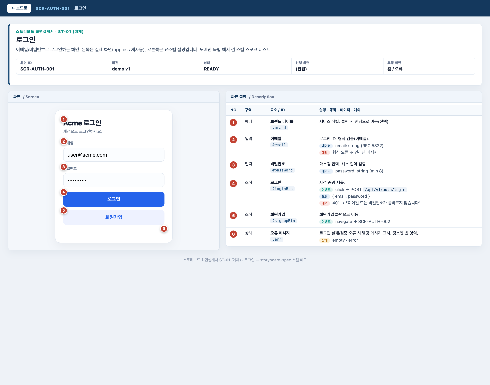

LEFT — 실제 화면
픽셀까지 재현
대상 앱의 진짜 CSS를 그대로 링크해 화면을 재현하고, 그 위에 번호 콜아웃 ①②③…을 얹습니다. 목업이 아니라 실제 화면입니다.
.brand · #email · #loginBtn …
Claude Code · Codex Skill
스토리보드식 화면설계서를 자동으로 만드는 스킬. 왼쪽은 실제 화면을 픽셀까지 재현하고 번호 콜아웃을 얹고, 오른쪽은 요소별 동작·데이터·예외 설명표를 나란히 둡니다. 기획자와 개발자가 한 문서로 같이 읽습니다.

What it produces
비개발자용 개요와 API 개발용 계약을 한 문서에 같이 담는 게 핵심입니다. 화면마다 페이지 하나, 그리고 전체를 잇는 보드.
대상 앱의 진짜 CSS를 그대로 링크해 화면을 재현하고, 그 위에 번호 콜아웃 ①②③…을 얹습니다. 목업이 아니라 실제 화면입니다.
콜아웃과 1:1로 대응하는 표. 요소/DOM id, 동작·이벤트, 데이터 계약, 상태, 예외를 한 줄씩.
화면 미리보기 썸네일 카드를 모은 인덱스. 카드를 누르면 해당 스토리보드가 별도 화면으로 열립니다.
Why it's worth it
스크린샷 붙이고, 화살표 그리고, 표 만들고, 바뀔 때마다 다시… 그 반복을 스킬이 대신합니다.
스크린샷이 아니라 대상 앱의 진짜 스타일시트로 화면을 다시 그립니다. 디자인이 바뀌면 설계서도 같이 최신.
비개발자는 왼쪽 화면과 개요로, 개발자는 오른쪽 엔드포인트·페이로드·예외로. 회의 자료와 구현 명세가 하나로.
콜아웃이 깨지는 CSS 충돌, 테이블 foster parenting 같은 실제로 겪은 함정의 방어 코드가 템플릿에 박혀 있습니다.
로그인·결제·대시보드 무엇이든. 웹·모바일·프레임워크 앱·Figma 목업까지 같은 형식으로 확장됩니다.
헤드리스 Chrome/Edge로 직접 찍어 콜아웃이 둥근 빨강 원으로 나오는지 확인한 뒤 완료를 선언합니다.
:root --sb-* 변수만 바꾸면 브랜드 색에 맞춥니다. 라벨을 치환하면 영어 문서도.
왜 직접 만들기 어려운가
화면설계서를 코드로 그리다 보면 꼭 같은 데서 무너집니다. 그 함정들의 해법이 템플릿에 들어 있습니다.
.row span{display:block} 같은 규칙이 콜아웃 원을 사각형으로 깨뜨립니다. .sb-cue의 !important가 방어.
<table> 직속 <span>을 밖으로 밀어냅니다(foster parenting). <div class="sb-mark">로 감싸 해결.
storyboard.css를 나중에. 그리고 스크린샷으로 검증한 뒤에야 완료.
Install
Claude Code와 Codex 둘 다, macOS · Linux · Windows 모두 같은 SKILL.md로 동작합니다.
# Git Bash · WSL 포함
git clone https://github.com/cskwork/storyboard-spec.git
cd storyboard-spec
./install.sh # 설치된 런타임 모두
./install.sh claude # Claude Code 만
./install.sh codex # Codex 만# 네이티브 PowerShell
git clone https://github.com/cskwork/storyboard-spec.git
cd storyboard-spec
.\install.ps1 # 양쪽
.\install.ps1 claude # Claude Code 만
.\install.ps1 codex # Codex 만스킬 디렉토리에 바로 클론해도 됩니다 — git clone … ~/.claude/skills/storyboard-spec. 스크린샷 검증엔 헤드리스 Chrome/Edge가 필요합니다(CHROME 환경변수로 지정 가능).
Usage
Claude Code / Codex에서 화면설계서나 스토리보드를 요청하면 스킬이 발동합니다.
"이 앱 화면들 화면설계서(스토리보드) 만들어줘"
"<app>/design-specs/에 로그인·결제 화면 스토리보드 만들어"
또는 슬래시 커맨드: /storyboard-spec → 화면 추출 · 실제 CSS 재현 · 콜아웃+표 · 보드 · 스크린샷 검증까지 한 번에.
Cross-domain
같은 형식을 다른 화면 소스로 확장합니다.